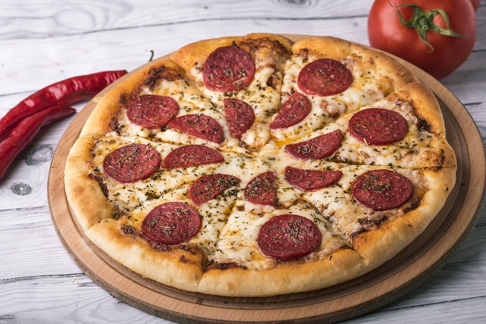

History of Pizza
Image used under public domain.
Classic Pepperoni Pizza
With a name roughly translated from the Italian “flat pie”, pizza originated in the Mediterranean and has been around for thousands of years. Pizza began as a staple reserved for the Neapolitan poor, known as lazzaroni, and was made with the cheapest ingredients found in the slums: flour, olive oil, lard, herbs, and cheese. As a result, Italian authors of the time treated such concoctions with disdain.
The reputability of pizza grew when Queen Maria Carolina successfully persuaded her husband, King Ferdinand IV, to have pizza made in the royal ovens. Suddenly, pizzas were no longer associated with the poor, and pizzaiolos, aka pizza chefs, were treated with the respect given to sushi chefs in modern day. Later, legend says that the established pizzaiolo Raffael Esposito once received a royal command from Queen Margherita to create pizzas for a feast. One pizza Queen Margherita enjoyed was the pizza mozzarella, a pie modeled after the Italian flag. With tomatoes, basil, and mozzarella cheese representing the red, green, and white sections of the flag, the pizza was coined the Margherita, a popular form of pizza found today.

"Eq it-na pizza-margherita sep2005 sml.jpg by ElfQrin is licensed under CC BY-SA 3.0
{kind=link}
Modern Margherita Pizza
Pizza soon spread across the Atlantic and made its way to the US through the travel of Italian immigrants.The first documented American pizzeria, coined Lombardi’s, opened its doors in Manhattan in 1905, increasing the popularity of pizza even more. According to the U.S. Department of Agriculture, ⅛ of the American population is eating pizza on any given day. Presently, many variations of pizza exist, including calzones, torta rustica, and deep-dish pizza. Regardless of shape or form, pizza cannot be made without the help of chemistry, where its various ingredients interact in reactions to create this popular staple.